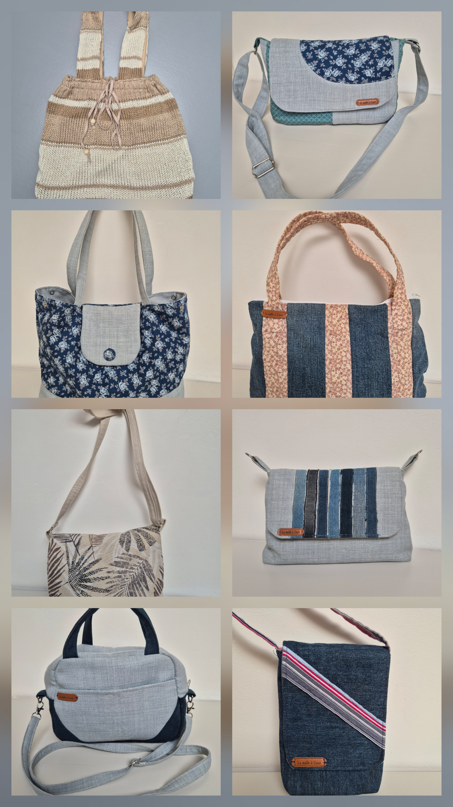

Des sacs uniques créés à partir de tissus réinventés
Je transforme des jeans, tissus d'ameublement, pulls et autres matières destinées à être oubliées en sacs à main uniques confectionnés à la main.
Chaque création possède sa propre histoire et est réalisée avec soin dans une démarche de réutilisation et de créativité.
Chaque modèle est une pièce unique.

Sac besace réversible

Sac Boston

Sac réalisé à partir d'un pull

Collection de créations

L'univers de La Malle à Coco
Coco est mon surnom depuis toujours.
Avec La Malle à Coco, j'aime donner une seconde vie aux tissus et créer des sacs utiles, durables et uniques.
Les modèles disponibles sont proposés sur Vinted et Leboncoin.